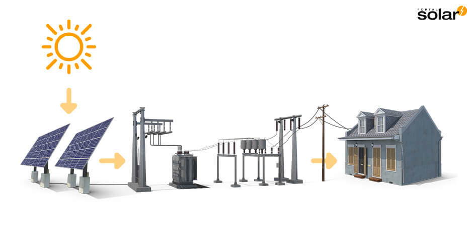
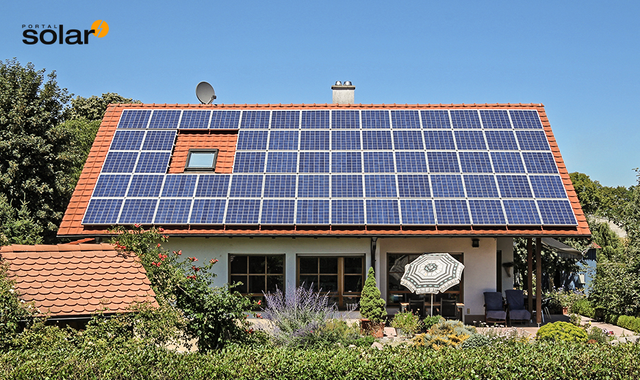

Energia Fotovoltaica Hispanica
A energia solar é a energia obtida pela conversão direta da luz do sol em eletricidade fotovoltaica. A célula solar, que é um dispositivo feito de material semicondutor, é a unidade padrão neste processo de conversão. O surgimento da energia fotovoltaica no sistema elétrico espanhol remonta a 1908, em San Agustín de Guadalix. A Iberdrola instalou a primeira rede de energia na península, durante quase 10 anos está foi a única ligação de 100 kwp por lá.Quatro sistemas de 2,7 kW em 1993 foram adicionados à instalação da ATERSA em Pozuelo de Alarcón numa casa particular. Essas instalações levaram a vários projetos de alta eficiência de 2 kW em uma escola em Menorca. 13,5 kW no instituto de Vitalilade Solar do Politécnico

Universidade de Madrid e 53 Kw na biblioteca Mataro. Condições tecnológicas e administrativas foram criadas para tornar a tecnologia acessível. Embora desses incentivos, a participação da energia solar no total de energia renovável era muito pequena em 2000, cerca de 6,5% do uso total de energia primária, sua impulsão vem principalmente da maior consciência social de cuidar do meio ambiente.
Energia Solar Residencial
 A energia solar para apartamentos consiste na instalação de painéis solares e sistemas de recuperação de energia fotovoltaica para garantir a autossuficiência energética relativa do edifício residencial e poupar nas faturas de eletricidade. Existem três tipos principais de sistemas solares domésticos: sistemas on-grid, off-grid e híbridos. O Sistema On-grid é o mais popular e possue conexão direta com a rede elétrica.
Dessa forma, o excesso de energia é direcionado à distribuidora e o proprietário recebe um desconto em sua conta. Off-grid é um sistema independente que não possui conexão com a rede elétrica. Amplamente utilizado em áreas remotas, onde não há sistema elétrico. O Sistema híbrido, por outro lado, caracteriza-se pelo fato de estar conectado à rede elétrica, mas também pode armazenar o excesso de produção em baterias, agregando as características dos sistemas on-grid e off-grid.